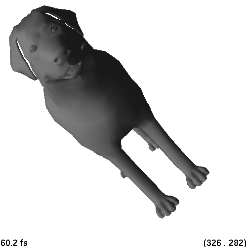
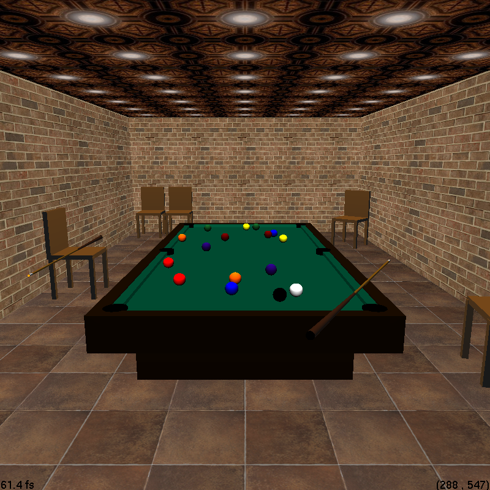
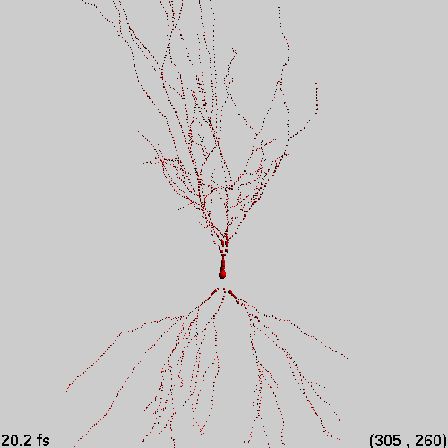

First version: Local transformation information ignored
First version: Texture coordinates ignored
First version: Texture not enabled
In order to implement ambient lighting, access to the ambient field of the current RayScene was necessary. Since none of the *.todo.cpp files contained a RayScene method from which I could use ambient, I had to modify rayScene.cpp directly by adding a call to glLightModelfv(GL_LIGHT_MODEL_AMBIENT, ambient_color) in RayScene::drawOpenGL.
Second version: Local transformations taken into account
Triangle texture mapping implemented
The feature description specifies rotation as the left+drag operation. However, the provided rayWindow.cpp instead gives translation as the left+drag operation, leaving rotation as the shift+left+drag operation. I had to swap the mouse bindings (lines 154 and 161 of rayWindow.cpp) in order to match the feature description.
While I was editing rayWindow.cpp, I also moved the near clipping plane ten times closer to the eye than originally specified (line 299).


See room.ray.
See room.ray and chair.ray.
See room.ray.
See room.ray.
I modified the provided main.cpp to accept three optional command-line arguments: out, rLimit, and cLimit. The argument out causes the ray file to be traced and written to the specified file. The arguments rLimit and cLimit specify the recursion and cutoff limits, with default values 5 and 0.0001.
While I was editing main.cpp, I also changed the default tessellation complexity to 128. Its original value of 10 produced horribly disfigured spheres.

-
In addition to scene rotation, I also implemented translation and zoom using shift+left+drag. (As previously mentioned, I had to swap the bindings for translation and rotation.)
Current implementations of GLUT for the X window system show unreliable behavior when dealing with certain mouse and keyboard events. In the provided mouse.cpp, neither glutGetModifiers() nor GLUT_SCROLL_WHEEL work on the latest versions of both freeglut and Fedora.
Despite these platform-specific limitations, I managed to implement zoom by replacing GLUT_SCROLL_WHEEL with its literal equivalents (integers 3 and 4) in mouse.cpp. Note that scrolling the mouse wheel one tick up will enter vertical translate/rotate mode, while scrolling one tick down will enter zoom mode; scrolling itself does not change the camera view. Horizontal translation/rotation will be in effect whether zoom is on or off, since the mouse binding for zoom ignores horizontal distance.
Although shift+left+drag should translate the camera, I can't be sure that the mouse binding actually works (due to the undetectable shift key on X). However, I do know for certain that translation itself works; I had temporarily set its mouse binding back to left+drag while testing.
- This image was created using room.ray, chair.ray, and cue.ray.
 - This image was created using neuron.swc and convert.py. The file neuron.swc is based on test data provided by Hanchuan Peng. The scene contains 2746 spheres.

The files room.ray, chair.ray, cue.ray, and neuron.ray were used to create the two images above.